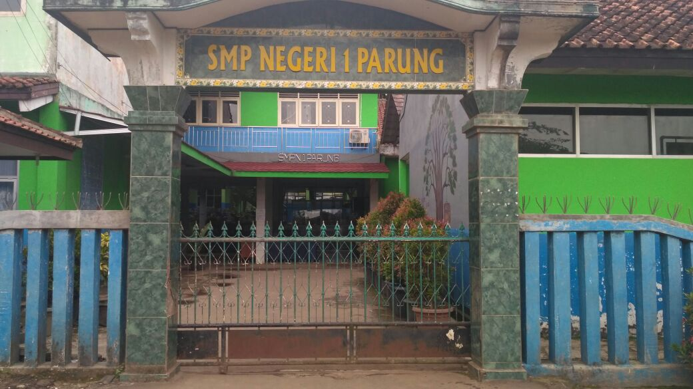
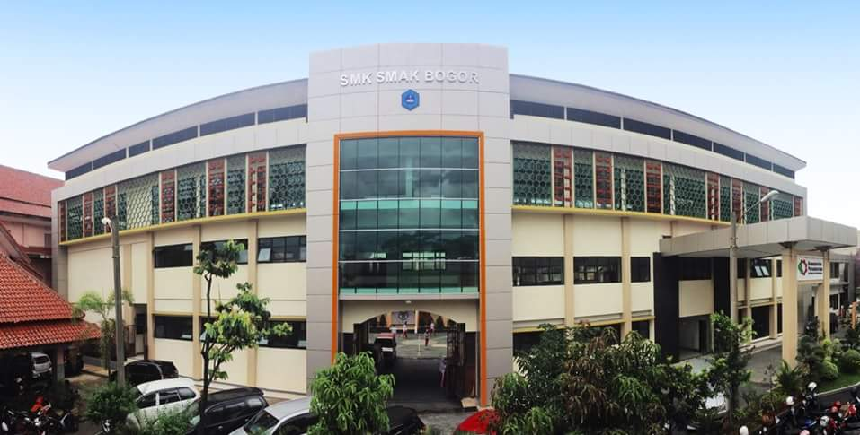

Name : Rifdah Almas Ardhiyanti
Date Of Birth : Bogor, 19 Maret 2001
Addres : Komp. Patal71 Lebakwangi Parung No: 35 Rt: 05/03
Sibling : 1 of 3 brother
Religion : Muslim
Age : 16
Gender : Female
Instagram : @rifdaah19
Email : rifdaha@smakbo.sch.id
Future Goals :
- Graduate from SMAKBO with the good grades
- Get a better job with a high sallary
- Be the nice person for everyone
- Make everyone happy especially my parents
Hobbies :
- Traveling
- Main piano

1. SDN Tajur

2. SMPN 1 Parung

3. SMK-SMAK Bogor

Nama saya Rifdah Almas Ardhiyanti . Saya biasa dipanggil 'Rifdah' atau 'Rip'.Saya tinggal di daerah Kabupaten Bogor yaitu Parung. Saya sekarang bersekolah di SMK-SMAK Bogor dan duduk di kelas 11. Awal mula saya bersekolah di sini karena keinginan saya sendiri yang waktu itu berpikir supaya nanti lulus sekolah bisa langsung bekerja dan mendapatkan penghasilan, saya mencoba ikut jalur prestasi menggunakan raport di SMAKBO dan ternyata waktu itu saya belum diterima karena ada nilai 1 pelajaran dikelas 8 kurang 2 poin dari 5 poin seharusnya. Kemudian saya mencoba untuk ikut jalur test tulis dan ternyata Alhamdulilah saya diterima dan setelah itu jadilah saya bersekolah di SMAKBO
Di SMAKBO saya bertemu dengan teman-teman yang mempunyai latar belakang hidup yang berbeda-beda. Saya kira waktu awal masuk SMAKBO sama dengan sekolah lainnya ternyata saat kelas 10 saya merasa belajar di SMAKBO sangat sulit terutama bagian pelajaran kimia yang benar-benar dipelajari sangat dalam, ternyata di kelas 11 saya merasa pelajaran lebih sulit karena pelajaran kimia di tingkat ini dibagi menjadi beberapa bagian . Di kelas 10 saya sering memanfaatkan waktu kosong untuk tidur karena merasa lelah dengan semua pelajaran yang ada. Tapi dengan saya mempunyai banyak teman yang baik dengan saya, dan mau berbagi ilmu untuk saling mengajarkan pelajaran ke saya, saya cukup senang dan nyaman berada di sekolah ini.
Tentang hobi saya ,saya lebih suka jalan-jalan ke tempat wisata atau kemana pun yang menarik perhatian saya. Saya suka jalan-jalan karena sekaligus untuk refrshing ketika saya bosan. Selain jalan-jalan saya suka bermain alat musik,yaitu Piano. Saya mencintai musik klasik sejak saya umur 4 SD. Menyukai dan bermain piano adalah kebahagiaan saya. Mengapa saya menyukai piano? karena bagi saya piano merupakan perwakilan hati nan indah, Yang bilamana kita terjemahkan tuts hitam mewakili rasa sedih ataupun kecewa dan tuts putih mewakili rasa senang ataupun bahagia.. Adakalanya kesedihan ataupun kekecewaan menghampiri dan tentu saja ketika tuts ini bermain ini bukanlah gambaran hidup yang indah namun hidup ketika hidup ini hanya memiliki satu tuts putih yang kita sebut denga senang ataupun bahagia juga tidaklah indah. Selain membaca jalan-jalan dan bermain piano saya juga suka makan saya tau jika makan bukanlah hobi melainkan kebutuhan tapi saya menyukai semua makanan yang ada itulah sebabnya saya hobi makan, saya tidak pernah memilah-milih makanan asal makanan itu bisa dimakan dan enak di lidah why not?...